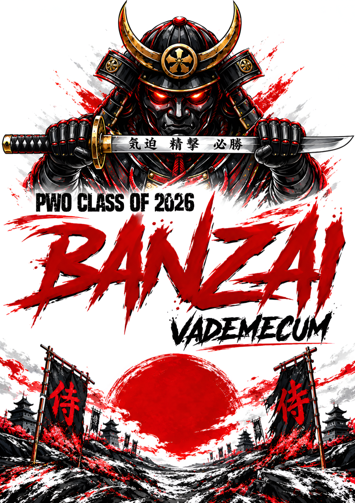
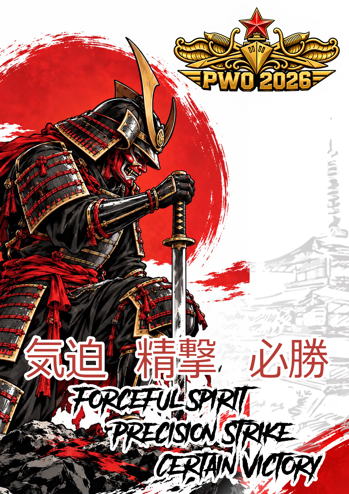

PRINCIPAL WARFARE OFFICER · CLASS OF 2026
Sekolah lanjutan perwira TNI Angkatan Laut yang membentuk pemimpin perang kapal kombatan. Siap tempur dan siap memimpin.
JELAJAHI MATERITENTANG PWO
PWO (Principal Warfare Officer) adalah program pendidikan lanjutan bagi perwira TNI Angkatan Laut yang difokuskan pada penguasaan komando taktik dan strategi peperangan laut modern. Kurikulum mencakup General Warfare, Anti Air Warfare (AAW), Anti Surface Warfare (ASuW), Anti Submarine Warfare (ASW), Electronic Warfare (EW), Mine Warfare (MW), serta referensi doktrin internasional IPWO Inggris & CCO Belanda.
Lulusan PWO dibekali kemampuan untuk memimpin operasi tempur di atas kapal perang, mengambil keputusan taktis yang presisi di bawah tekanan tinggi, dan mengoordinasikan seluruh elemen gugus tempur laut secara terintegrasi dan mematikan.

PERPUSTAKAAN DIGITAL
Koleksi kurikulum, modul taktis, dan referensi doktrin peperangan laut dalam satu platform.
GW
Bahasa Inggris, Manajemen Tempur, dan Informasi Tempur kapal kombatan.
ASuW
Prosedur Taktis AKPA, Penggunaan Senjata AKPA, Taktik Fast Patrol Boat, dan Latihan Simulasi AKPA.
ASW
Pengaruh Alam dalam AKS, Prosedur Taktis, Penggunaan Senjata, Operasi Kapal Selam, dan Simulasi AKS.
AAW
Prosedur Taktis PAU, Anti Ship Missile Defence (ASMD), Senjata Anti Udara, dan Simulasi PAU.
EW
Dasar Pernika, Pernika, manajemen spektrum, jamming, ESM, dan tindakan pertahanan ECCM.
MW
Operasi ranjau laut, deteksi rute aman pelayaran, dan Mine Countermeasures (MCM).
REF
Koleksi doktrin & manual standar internasional untuk perbandingan taktis.